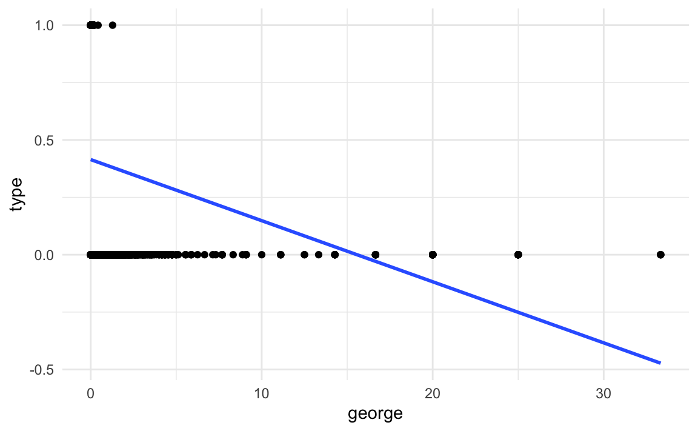
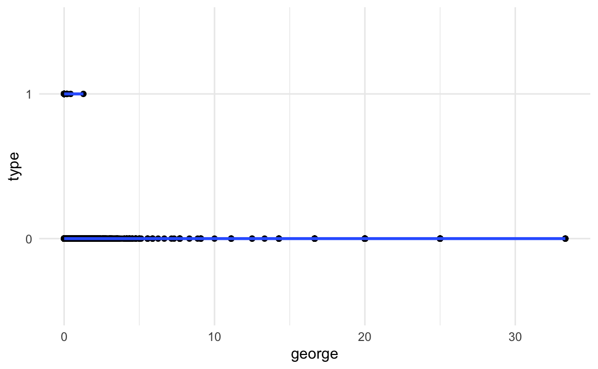
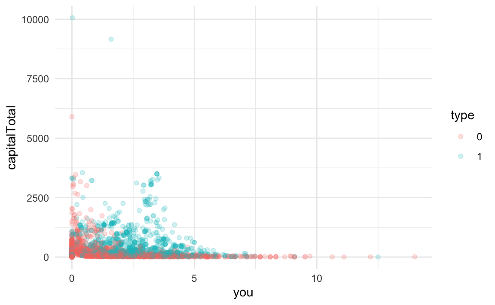

library(tidyverse)
library(tidymodels)
library(ggthemes)
hp_spam <- read_csv("data/hp-spam.csv")Spam email
Application exercise
Suggested answers
In this application exercise, we’ll build a spam filter. Or, at least, learn a bit about how spam filters are built by building a very simple (likely not very effective) one.
Goals
Understand logistic regression as a linear model of binary outcomes
Fit and interpret logistic regression models in R
Packages and data
To illustrate logistic regression, we will build a spam filter from email data. Today’s data consists of 4601 emails that are classified as spam or non-spam.
type = 1is spamtype = 0is non-spam
The data was collected at Hewlett-Packard labs and contains 4601 variables. The first 48 variables are specific keywords and each observation is the percentage of appearance of that word in the message. Click here to read more.
glimpse(hp_spam)Rows: 4,601
Columns: 58
$ make <dbl> 0.00, 0.21, 0.06, 0.00, 0.00, 0.00, 0.00, 0.00, 0.15…
$ address <dbl> 0.64, 0.28, 0.00, 0.00, 0.00, 0.00, 0.00, 0.00, 0.00…
$ all <dbl> 0.64, 0.50, 0.71, 0.00, 0.00, 0.00, 0.00, 0.00, 0.46…
$ num3d <dbl> 0, 0, 0, 0, 0, 0, 0, 0, 0, 0, 0, 0, 0, 0, 0, 0, 0, 0…
$ our <dbl> 0.32, 0.14, 1.23, 0.63, 0.63, 1.85, 1.92, 1.88, 0.61…
$ over <dbl> 0.00, 0.28, 0.19, 0.00, 0.00, 0.00, 0.00, 0.00, 0.00…
$ remove <dbl> 0.00, 0.21, 0.19, 0.31, 0.31, 0.00, 0.00, 0.00, 0.30…
$ internet <dbl> 0.00, 0.07, 0.12, 0.63, 0.63, 1.85, 0.00, 1.88, 0.00…
$ order <dbl> 0.00, 0.00, 0.64, 0.31, 0.31, 0.00, 0.00, 0.00, 0.92…
$ mail <dbl> 0.00, 0.94, 0.25, 0.63, 0.63, 0.00, 0.64, 0.00, 0.76…
$ receive <dbl> 0.00, 0.21, 0.38, 0.31, 0.31, 0.00, 0.96, 0.00, 0.76…
$ will <dbl> 0.64, 0.79, 0.45, 0.31, 0.31, 0.00, 1.28, 0.00, 0.92…
$ people <dbl> 0.00, 0.65, 0.12, 0.31, 0.31, 0.00, 0.00, 0.00, 0.00…
$ report <dbl> 0.00, 0.21, 0.00, 0.00, 0.00, 0.00, 0.00, 0.00, 0.00…
$ addresses <dbl> 0.00, 0.14, 1.75, 0.00, 0.00, 0.00, 0.00, 0.00, 0.00…
$ free <dbl> 0.32, 0.14, 0.06, 0.31, 0.31, 0.00, 0.96, 0.00, 0.00…
$ business <dbl> 0.00, 0.07, 0.06, 0.00, 0.00, 0.00, 0.00, 0.00, 0.00…
$ email <dbl> 1.29, 0.28, 1.03, 0.00, 0.00, 0.00, 0.32, 0.00, 0.15…
$ you <dbl> 1.93, 3.47, 1.36, 3.18, 3.18, 0.00, 3.85, 0.00, 1.23…
$ credit <dbl> 0.00, 0.00, 0.32, 0.00, 0.00, 0.00, 0.00, 0.00, 3.53…
$ your <dbl> 0.96, 1.59, 0.51, 0.31, 0.31, 0.00, 0.64, 0.00, 2.00…
$ font <dbl> 0, 0, 0, 0, 0, 0, 0, 0, 0, 0, 0, 0, 0, 0, 0, 0, 0, 0…
$ num000 <dbl> 0.00, 0.43, 1.16, 0.00, 0.00, 0.00, 0.00, 0.00, 0.00…
$ money <dbl> 0.00, 0.43, 0.06, 0.00, 0.00, 0.00, 0.00, 0.00, 0.15…
$ hp <dbl> 0, 0, 0, 0, 0, 0, 0, 0, 0, 0, 0, 0, 0, 0, 0, 0, 0, 0…
$ hpl <dbl> 0, 0, 0, 0, 0, 0, 0, 0, 0, 0, 0, 0, 0, 0, 0, 0, 0, 0…
$ george <dbl> 0, 0, 0, 0, 0, 0, 0, 0, 0, 0, 0, 0, 0, 0, 0, 0, 0, 0…
$ num650 <dbl> 0.00, 0.00, 0.00, 0.00, 0.00, 0.00, 0.00, 0.00, 0.00…
$ lab <dbl> 0, 0, 0, 0, 0, 0, 0, 0, 0, 0, 0, 0, 0, 0, 0, 0, 0, 0…
$ labs <dbl> 0, 0, 0, 0, 0, 0, 0, 0, 0, 0, 0, 0, 0, 0, 0, 0, 0, 0…
$ telnet <dbl> 0, 0, 0, 0, 0, 0, 0, 0, 0, 0, 0, 0, 0, 0, 0, 0, 0, 0…
$ num857 <dbl> 0, 0, 0, 0, 0, 0, 0, 0, 0, 0, 0, 0, 0, 0, 0, 0, 0, 0…
$ data <dbl> 0.00, 0.00, 0.00, 0.00, 0.00, 0.00, 0.00, 0.00, 0.15…
$ num415 <dbl> 0, 0, 0, 0, 0, 0, 0, 0, 0, 0, 0, 0, 0, 0, 0, 0, 0, 0…
$ num85 <dbl> 0, 0, 0, 0, 0, 0, 0, 0, 0, 0, 0, 0, 0, 0, 0, 0, 0, 0…
$ technology <dbl> 0.00, 0.00, 0.00, 0.00, 0.00, 0.00, 0.00, 0.00, 0.00…
$ num1999 <dbl> 0.00, 0.07, 0.00, 0.00, 0.00, 0.00, 0.00, 0.00, 0.00…
$ parts <dbl> 0, 0, 0, 0, 0, 0, 0, 0, 0, 0, 0, 0, 0, 0, 0, 0, 0, 0…
$ pm <dbl> 0, 0, 0, 0, 0, 0, 0, 0, 0, 0, 0, 0, 0, 0, 0, 0, 0, 0…
$ direct <dbl> 0.00, 0.00, 0.06, 0.00, 0.00, 0.00, 0.00, 0.00, 0.00…
$ cs <dbl> 0, 0, 0, 0, 0, 0, 0, 0, 0, 0, 0, 0, 0, 0, 0, 0, 0, 0…
$ meeting <dbl> 0, 0, 0, 0, 0, 0, 0, 0, 0, 0, 0, 0, 0, 0, 0, 0, 0, 0…
$ original <dbl> 0.00, 0.00, 0.12, 0.00, 0.00, 0.00, 0.00, 0.00, 0.30…
$ project <dbl> 0.00, 0.00, 0.00, 0.00, 0.00, 0.00, 0.00, 0.00, 0.00…
$ re <dbl> 0.00, 0.00, 0.06, 0.00, 0.00, 0.00, 0.00, 0.00, 0.00…
$ edu <dbl> 0.00, 0.00, 0.06, 0.00, 0.00, 0.00, 0.00, 0.00, 0.00…
$ table <dbl> 0, 0, 0, 0, 0, 0, 0, 0, 0, 0, 0, 0, 0, 0, 0, 0, 0, 0…
$ conference <dbl> 0, 0, 0, 0, 0, 0, 0, 0, 0, 0, 0, 0, 0, 0, 0, 0, 0, 0…
$ charSemicolon <dbl> 0.000, 0.000, 0.010, 0.000, 0.000, 0.000, 0.000, 0.0…
$ charRoundbracket <dbl> 0.000, 0.132, 0.143, 0.137, 0.135, 0.223, 0.054, 0.2…
$ charSquarebracket <dbl> 0.000, 0.000, 0.000, 0.000, 0.000, 0.000, 0.000, 0.0…
$ charExclamation <dbl> 0.778, 0.372, 0.276, 0.137, 0.135, 0.000, 0.164, 0.0…
$ charDollar <dbl> 0.000, 0.180, 0.184, 0.000, 0.000, 0.000, 0.054, 0.0…
$ charHash <dbl> 0.000, 0.048, 0.010, 0.000, 0.000, 0.000, 0.000, 0.0…
$ capitalAve <dbl> 3.756, 5.114, 9.821, 3.537, 3.537, 3.000, 1.671, 2.4…
$ capitalLong <dbl> 61, 101, 485, 40, 40, 15, 4, 11, 445, 43, 6, 11, 61,…
$ capitalTotal <dbl> 278, 1028, 2259, 191, 191, 54, 112, 49, 1257, 749, 2…
$ type <dbl> 1, 1, 1, 1, 1, 1, 1, 1, 1, 1, 1, 1, 1, 1, 1, 1, 1, 1…The basic logic of our model is that the frequency of certain words can help us determine whether or not an email is spam.
For example, these emails came from George’s inbox. If the word “george” (george) is not present in the message and the dollar symbol (charDollar) is, you might expect the email to be spam.
Using this data, we want to build a model that predicts whether a new email is spam or not. How do we build a model that can do this?
Setting default theme
You can apply the same theme for your ggplots throughout your document.
theme_set(theme_minimal())Building intuition
Exercise 1
One predictor model: Visualize a linear model where the outcome is type (spam or not) and george is the only predictor. Then, discuss your visualization with your neighbor. Is this a good model? Why or why not?
Doesn’t make sense to draw a line and predict values between 0 and 1.
ggplot(hp_spam, aes(x = george, y = type)) +
geom_point() +
geom_smooth(method = "lm", se = FALSE)`geom_smooth()` using formula = 'y ~ x'
Exercise 2
What type of data is type, our outcome variable? What type should it be? Make any adjustments necessary and recreate the visualization from Exercise 1. Does this model look better? Why or why not?
hp_spam <- hp_spam |>
mutate(type = as.factor(type))
ggplot(hp_spam, aes(x = george, y = type)) +
geom_point() +
geom_smooth(method = "lm", se = FALSE)`geom_smooth()` using formula = 'y ~ x'
Moral of the story so far: A linear model is not a good model for binary outcomes.
Spending your data
Our ultimate goal is to do prediction (or classification) on new data – a new email. Therefore, we should build a model using some of the data and then test it on the rest of the data.
Let’s divide the data into a training set and testing set.
set.seed(109)
hp_spam_split <- initial_split(hp_spam)
hp_spam_train <- training(hp_spam_split)
hp_spam_test <- testing(hp_spam_split)Exercise 3
Inspect hp_spam_split. How many emails are in hp_spam_train, how many are in hp_spam_test. Check out the documentation for the initial_split() function, what ratio does it use for splitting the dataset into training and testing samples?
25% in test, 75% in train.
Exercise 4
Two predictor model: In this exercise focus on two predictors: you and capitalTotal.
- Create a visualization with
youon the x-axis andcapitalTotalon the y-axis. Color data points by whether or not they are spam (type). Make sure thattypeis being used as a categorical variable (factor).
ggplot(hp_spam_train, aes(x = you, y = capitalTotal, color = type)) +
geom_point(alpha = 0.2)
- Fit the model predicting
typefromyouandcapitalTotal. Comment on how the code differs from code used in previous models we fit. Also comment on how it’s similar.
spam_fit <- logistic_reg() |>
fit(type ~ you + capitalTotal, data = hp_spam_train)
tidy(spam_fit)# A tibble: 3 × 5
term estimate std.error statistic p.value
<chr> <dbl> <dbl> <dbl> <dbl>
1 (Intercept) -1.53 0.0646 -23.6 1.93e-123
2 you 0.356 0.0230 15.5 3.46e- 54
3 capitalTotal 0.00189 0.000126 15.0 6.69e- 51Exercise 5
Write the model equation.
\[ logit(\hat{p}) = -1.50 + 0.361 \times you + 0.00173 \times capitalTotal \]
\[ log(\frac{\hat{p}}{1 - \hat{p}}) = -1.50 + 0.361 \times you + 0.00173 \times capitalTotal \]
Exercise 6
What is the probability the email is spam if the frequency of you is 5% in the email and there are 2500 capital letters.
- First, do this “by hand” (using R as a calculator) and the model you wrote in the previous exercise.
logit_phat <- -1.50 + 0.361*5 + 0.00173*2500
phat <- exp(logit_phat) / (1 + exp(logit_phat))
phat[1] 0.9903395- Then, do it using R functions designed for prediction.
new_email <- tibble(
you = 5,
capitalTotal = 2500
)
predict(spam_fit, new_data = new_email)# A tibble: 1 × 1
.pred_class
<fct>
1 1 predict(spam_fit, new_data = new_email, type = "prob")# A tibble: 1 × 2
.pred_0 .pred_1
<dbl> <dbl>
1 0.00692 0.993predict(spam_fit, new_data = new_email, type = "class")# A tibble: 1 × 1
.pred_class
<fct>
1 1 Classify a new email
Read a new email and figure out values of you and capitalTotal and store these in a new tibble called new_email.
email_text <- read_lines("data/email-text.txt")
email_text[1] "You Have Been Selected To Win A Free Trip To Disney World! "
[2] ""
[3] "YOU HAVE 30 SECONDS TO CLICK HERE TO CLAIM YOUR REWARD!"
[4] ""
[5] "WHAT ARE YOU WAITING FOR? ACT NOW!"
[6] ""
[7] "SINCERELY,"
[8] ""
[9] "WALT DISNEY" totalWord <- sum(str_count(email_text, " "))
totalYou <- sum(str_count(tolower(email_text), "you"))
you <- 100 * totalYou / totalWord
capitalTotal <- sum(str_count(email_text, "[A-Z]"))
new_email <- tibble(
you = you,
capitalTotal = capitalTotal
)Exercise 8
Using your model, predict whether this email will be classified as spam or not. What does the model predict for the probability that this email is spam? With a decision boundary of 0.5, how does the model classify thie email? Do you believe this classification? Why or why not?
predict(spam_fit, new_data = new_email)# A tibble: 1 × 1
.pred_class
<fct>
1 1 predict(spam_fit, new_data = new_email, type = "prob")# A tibble: 1 × 2
.pred_0 .pred_1
<dbl> <dbl>
1 0.0274 0.973The model predicts 0.973 probability that this new email is spam. This seems reasonable based on the new email text.
Assessing predictive ability
First, let’s start over with a new model.
Exercise 9
Train your model on the training set. Build a predictive model using any combination of predictors to predict type. Save your fitted model as my_model_fit and display its tidy summary.
my_model_fit <- logistic_reg() |>
fit(type ~ you + free + credit + charExclamation, data = hp_spam_train)Warning: glm.fit: fitted probabilities numerically 0 or 1 occurredtidy(my_model_fit)# A tibble: 5 × 5
term estimate std.error statistic p.value
<chr> <dbl> <dbl> <dbl> <dbl>
1 (Intercept) -1.54 0.0627 -24.6 1.04e-133
2 you 0.249 0.0234 10.6 1.79e- 26
3 free 1.19 0.108 11.0 4.95e- 28
4 credit 3.05 0.427 7.15 8.87e- 13
5 charExclamation 1.23 0.121 10.2 2.21e- 24Exercise 10
Make predictions for your testing set and augment your testing set with these predictions.
my_model_aug <- augment(my_model_fit, hp_spam_test) |>
select(contains("pred"), type, you, address)Exercise 11
What are the false positive and false negative rates of this model?
my_model_aug |>
count(type, .pred_class) |>
group_by(type) |>
mutate(prop = n / sum(n))# A tibble: 4 × 4
# Groups: type [2]
type .pred_class n prop
<fct> <fct> <int> <dbl>
1 0 0 640 0.925
2 0 1 52 0.0751
3 1 0 215 0.468
4 1 1 244 0.532 Visualizing logistic regression
Just because there’s greater than 50% probability an email is spam doesn’t mean we have to label it as such. We can adjust our threshold or critical probability, a.k.a. decision boundary to be more or less sensitive to spam emails.
my_model_aug <- augment(my_model_fit, new_data = hp_spam_test)
decision_boundary <- 0.5
ggplot(my_model_aug, aes(x = .pred_1, y = type)) +
geom_jitter(alpha = 0.5, color = "darkgray", height = 0.2) +
geom_vline(xintercept = decision_boundary, color = "red", linetype = "dashed")In other words, we get to select a number \(p^*\) such that if \(p > p^*\), then label the email as spam.
Exercise 12
What would you set your decision boundary to and why?
Change
decision_boundaryin the code above to 0.01 and 0.999999. Do the results surprise you? Why or why not?
Answers may vary.
Exercise 13
If you set a lower decision boundary, do you label fewer or more emails as spam? What happens if you set 0 as your boundary? What about 1 as your boundary? If you very much dislike spam, should you set a high or low boundary?
Lower boundary means that we label more emails as spam, high boundary means fewer emails as spam. We can adjust the boundary depending on how much we value receiving important emails vs how much we dislike spam.
0 means all emails are spam, 1 means no emails are spam. Note you cannot set decision boundary to 0 or 1 because of logit function (would evaluate to infinity or negative infinity).
Exercise 14
Recreate the jittered scatterplot from earlier, this time using color to indicate the following four decision regions and label them on the plot. Make decision_boundary a value you can update and re-run the code to see how the decision regions change.
decision_boundary <- 0.5
my_model_aug |>
mutate(
.pred_class = if_else(.pred_1 >= decision_boundary, 1, 0),
decision_region = case_when(
.pred_class == 0 & type == 0 ~ "True negative",
.pred_class == 0 & type == 1 ~ "False positive",
.pred_class == 1 & type == 0 ~ "False negative",
.pred_class == 1 & type == 1 ~ "True positive",
)
) |>
ggplot(aes(x = .pred_1, y = type, color = decision_region)) +
geom_jitter(alpha = 0.5, height = 0.2, show.legend = FALSE) +
geom_vline(xintercept = decision_boundary, color = "coral3", linetype = "dashed", linewidth = 1) +
annotate(geom = "text", x = decision_boundary+0.025, y = 1.5, label = "Decision\nboundary", fontface = "bold", color = "coral3", hjust = 0) +
annotate(geom = "label", x = 0.1, y = 2, label = "False\nnegative", alpha = 0.8) +
annotate(geom = "label", x = 0.8, y = 2, label = "True\npositive", alpha = 0.8) +
annotate(geom = "label", x = 0.1, y = 1, label = "True\nnegative", alpha = 0.8) +
annotate(geom = "label", x = 0.8, y = 1, label = "False\npositive", alpha = 0.8) +
labs(
x = "Predicted probability of email being spam",
y = "Actual"
) +
scale_y_discrete(labels = c("Not spam", "Spam")) +
scale_x_continuous(limits = c(0, 1)) +
scale_color_colorblind()